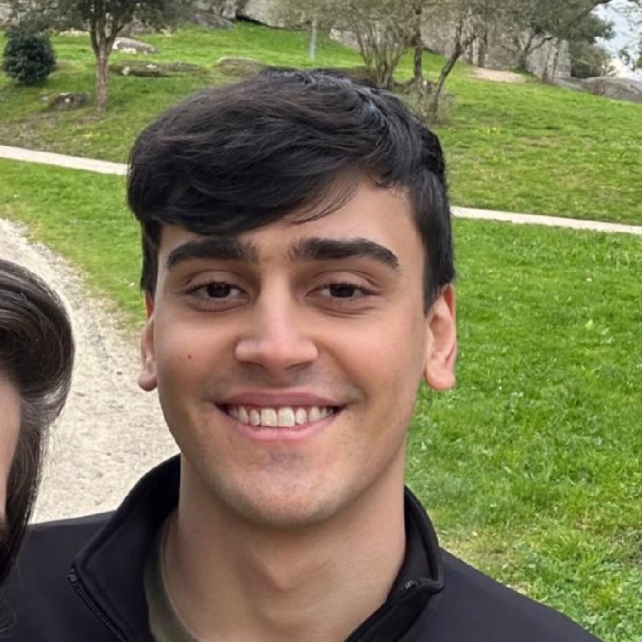

Nossa Equipe
A Lobo-guará Tech nasceu com o propósito de unir a inovação tecnológica da Sociedade 5.0 à urgência da preservação ambiental. Nosso objetivo é transformar hábitos ecológicos do dia a dia em uma experiência engajadora e recompensadora através da gamificação. Acreditamos que o desenvolvimento de sistemas deve servir ao bem-estar planetário, provando que linhas de código podem ser ferramentas ativas para proteger nossa biodiversidade e construir um futuro sustentável.
